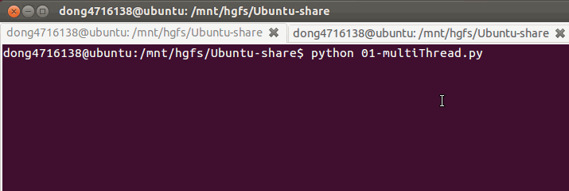

线程
1. 引入
如果一个程序想同时执行多个部分的代码，那么基本有2种方式实现：
- 线程
- 进程
我们首先来研究线程
2. 什么是线程
线程是一个抽象的概念，可以把它想象成程序在执行代码时的那个执行流
3. 通过线程实现多任务
在Python中如果想使用线程实现多任务，可以使用thread模块 但是它比较底层，即意味着过程较为复杂不方便使用；推荐使用threading模块，它是对thread做了一些包装的，可以更加方便使用
4. 使用threading模块
4.1 单线程执行
import time
def say_sorry():
print("亲爱的，我错了，我能吃饭了吗？")
time.sleep(1)
for i in range(5):
say_sorry()
运行结果：

4.2 多线程执行
import threading
import time
def say_sorry():
print("亲爱的，我错了，我能吃饭了吗？")
time.sleep(1)
for i in range(5):
t = threading.Thread(target=say_sorry)
t.start() # 启动线程，即让线程开始执行
运行结果：

4.3 说明
- 可以明显看出使用了多线程并发的操作，花费时间要短很多
- 当调用
start()时，才会真正的创建线程，并且开始执行
5. 同时执行多个不同的任务
import threading
from time import sleep, ctime
def sing():
for i in range(3):
print("正在唱歌...%d" % i)
sleep(1)
def dance():
for i in range(3):
print("正在跳舞...%d" % i)
sleep(1)
print('---开始---:%s' % ctime())
t1 = threading.Thread(target=sing)
t2 = threading.Thread(target=dance)
t1.start()
t2.start()
#sleep(5) # 屏蔽此行代码，试试看，程序是否会立马结束？
print('---结束---:%s' % ctime())

同时指定多个不同任务的代码编写流程
- 如果在一个程序中需要有多个任务一起执行，可以将每个任务单独放到一个函数中
- 使用threading.Thread创建一个对象，注意实参target需要指定为刚刚定义的函数名（不要写上小括号，那表示调用函数了）
- 调用threading.Thread返回的对象中的start方法（会让这个线程开始运行）
注意：
主线程会等待所有的子线程结束后才结束
6. 多线程执行的顺序不确定
import threading
from time import sleep, ctime
def test1():
"""
这是一个单独的任务
"""
for i in range(10):
print("任务1...%d" % i)
sleep(0.1)
def test2():
"""
这是另外一个单独的任务
"""
for i in range(5):
print("任务2...%d" % i)
sleep(0.2)
t1 = threading.Thread(target=test1)
t2 = threading.Thread(target=test2)
t1.start()
t2.start()
第1次运行，结果如下
第2次运行，结果如下
小结：
当python程序中有多个任务需要被执行时，这些任务需要等待操作系统的调度（即操作系统安排接下来要执行哪个任务），因为每次运行程序时的环境（例如上次运行时 除了这个python程序之外还有QQ、微信在运行，而这次运行时没有QQ只有微信在运行都会影响操作系统的调度策略）不一样，所以多次运行同一个python程序时任务执行的先后顺序是不同的
7. 查看线程数量（了解）
import threading
from time import sleep,ctime
def sing():
for i in range(3):
print("正在唱歌...%d" % i)
sleep(1)
def dance():
for i in range(3):
print("正在跳舞...%d" % i)
sleep(1)
print('---开始---:%s' % ctime())
t1 = threading.Thread(target=sing)
t2 = threading.Thread(target=dance)
t1.start()
t2.start()
while True:
# threading.enumerate()能够得到当前这个程序中正在运行的所有任务，是一个列表
length = len(threading.enumerate())
print('当前运行的线程数为：%d' % length)
if length <= 1:
break
# 延时一会，等等其他线程执行
sleep(0.5)
小结：
- 使用threading.enumerate()能够得到当前程序在运行时，所有的线程信息，以列表的方式返回
- 我们可以让主线程(程序运行后的默认线程)，判断threading.enumerate()返回的线程数量，如果只有1个线程，那么就表示当前主线程自己，意味着没有其他的子线程(使用threading创建的那些线程)，此时就可以结束主线程，只要主线程结束 那么这个程序也就结束了